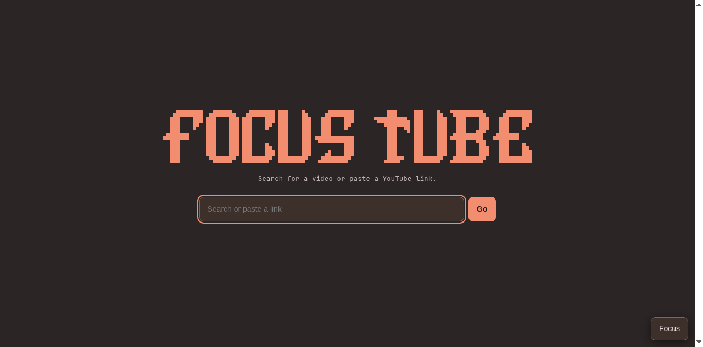

Open with a purpose
A simple starting page, without a recommendation feed asking for your attention.
Find the video you came for.
Leave the distractions behind.
Same videos. A calmer place to find them.
Focus Tube opens YouTube in its own Chromium window, with a small local extension that clears the clutter.

A simple starting page, without a recommendation feed asking for your attention.
A clean results grid, three card sizes, and YouTube’s own search filters.
Watch your video without the usual suggestions, end cards, or automatic next video.
These distractions start switched off.
Turn them back on whenever you want.
Your choices are saved between visits.
Change these inside the app’s Focus panel.
The interface and pixel icon follow your Omarchy palette. An open page updates when you navigate or bring the app back into view.
A dedicated Chromium app window that fits your tiled desktop. Launch it from the app menu, or add your own keyboard shortcut.
No framework or build pipeline in the app. Just a local extension, a launcher, and a theme helper. All of it is open source.
Made for Omarchy, with Chromium and Python.
The AUR listing is coming; you can install directly from the repository today.
The local installer sets up the launcher, desktop entry, and theme hook in your home directory.
Prefer pacman to manage the app? Build the Arch package from the included recipe.
Read the full instructionsgit clone https://github.com/Trolzie/focus-tube.git
cd focus-tube
./install.shThen launch Focus Tube from your app menu, or run ~/.local/bin/youtube-focus.
Focus Tube is a desktop app, not a video player on this site. It runs YouTube in a dedicated Chromium window and changes the interface with a local extension. Install it on Omarchy to use the full experience.
Yes. You’re using YouTube’s own pages. Focus Tube has a separate browser profile, so signing in happens inside its own window.
Pull the latest repository changes and rerun the installer, or rebuild your package. Close and reopen the app to load updates. Uninstalling deletes the dedicated browser profile, including its settings, cookies, and history. See the README for the full commands.
No. Focus Tube is an independent, open source project under the MIT license. It uses YouTube’s pages, so YouTube interface changes may occasionally require a fix. Bug reports are welcome.